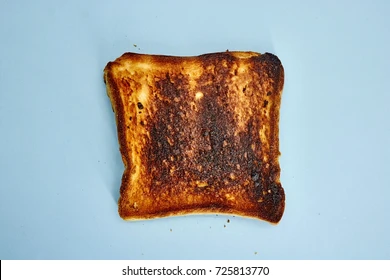

Burnt Toast

Description
This recipe requires you to first place your toast in the toaster and set it to high.
You may choose to use white, brown, or rye bread. The world is your oyster.
Ingredients
- Your choice of bread
- Butter
Steps
- Place bread into toaster.
- Set toaster to the highest setting possible.
- Press down on toaster handle and keep an eye one it so there is no fire.
- Remove from toaster when popped and butter liberally.
- Enjoy your BuRnT tOaSt!